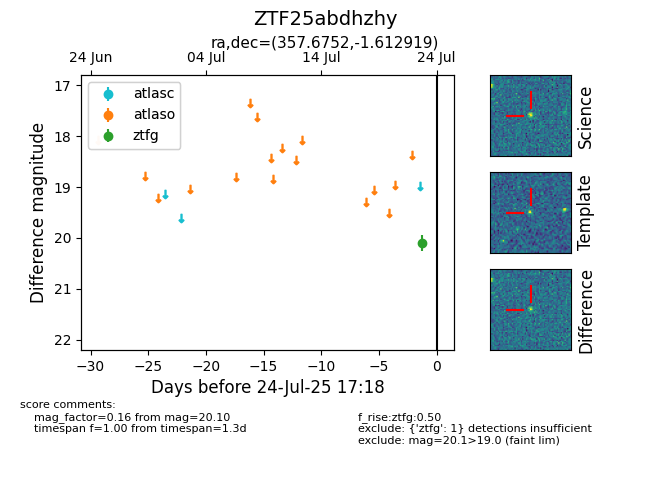

Target ZTF25abdhzhy at 2025-07-24 17:18, see:
FINK: fink-portal.org/ZTF25abdhzhy
Lasair: lasair-ztf.lsst.ac.uk/objects/ZTF25abdhzhy
ALeRCE: alerce.online/object/ZTF25abdhzhy
alt names
ZTF25abdhzhy (ztf,fink)
coordinates:
equatorial (ra, dec) = (357.6752,-1.61292)
galactic (l, b) = (90.6744,-60.62307)
photometry
last ztfg=20.10
1 ztfg detections
